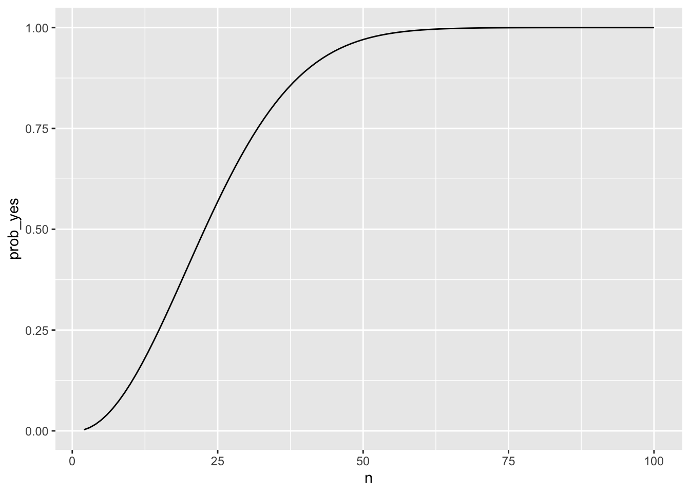
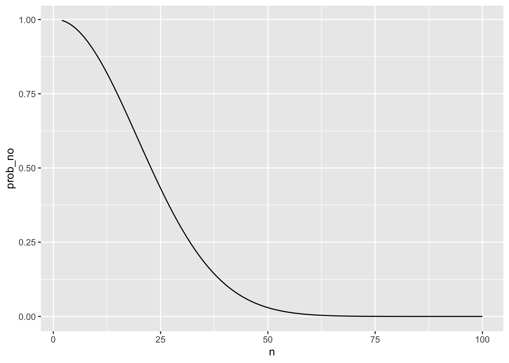

![]()
Warning: `qplot()` was deprecated in ggplot2 3.4.0.

Paradox: a seemingly absurd or contradictory statement or proposition which when investigated may prove to be well founded or true. (Oxford Languages)
Imagine you are in a room with several people. In your opinion, do you think there will be at least two people that share the same birthday?
If so, can we estimate or count the possibility?
What concept do we need to answer those questions?
Personally, this challenge evokes memories from eight years ago when a Centenary Professor from University of Canberra visited our province to provide professional development coaching for math teachers. During that event, my colleagues and I served as facilitators. In one captivating afternoon session, he engaged us in a “game,” organizing us based on our birthdays. With a gathering of no fewer than 50 people, we began to notice that a few among us shared the same birthday! I mean, who wouldn’t get excited when the conversation revolves around birthdays?.
As the audience relished the occasion, the professor seamlessly transitioned to stimulating our mathematical thinking, ultimately leading to the introduction of the birthday paradox concept. Fast forward to last week, I found myself in my supervisor’s class, and interestingly, one of the tasks he assigned to the students involved the birthday problem. It struck me as amusing—different place, different time, different person, yet the same intriguing math problem.
Now, let’s delve into examining this problem from a probability perspective.
Many people initially think the probability would be low, assuming there are 365 days in a year, and the chance of any two people sharing a specific day is relatively small. However, the counterintuitive result stems from the fact that the question is not asking about a specific pair of individuals sharing a birthday but rather any pair within the group.
This question can be answered using the probability theory (read also here). Beforehand, we can assume the following:
There are `365` days in a year;
each day has an equal probability of being a birthday;
each birthday is independent of the others.
Suppose the event in this case is defined as the presence of at least 2 people who share the same birthday. Rather than to compute the probability of that event, Calculating the probability of it complement, which is the probability of nobody sharing a birthday, is a much simpler task.
We know that, if n is the number of people, each of them has 365 options for their birthday, then total number of possible combinations for their birthdays is \(365^n\). The event that nobody sharing a birthday means that each birthday must be unique, so there will be \(P_n^{365}=\frac{365!}{(365-n)!}\) ways of choosing them. We know that if we want to know the probability then we should divide the number of event with the number of total event and that will give us the formula below:
\[\begin{align}Pr(No\ common\ BD ) \ &= \ \frac{365!}{(365-n)!365^n}\\ Pr(at\ least\ two\ shares\ common\ BD ) \ &= \ 1- \frac{365!}{(365-n)!365^n} \end{align}\]
The following plot illustrates the relationship between the number of people in a room and the probability of at least 2 people sharing the same birthday.
Warning: `qplot()` was deprecated in ggplot2 3.4.0.

This plot helps visualize the counterintuitive nature of the birthday paradox. As the number of people in the room increases, the probability of at least two people sharing the same birthday rises more quickly than one might expect. It’s a fascinating phenomenon that often surprises those encountering it for the first time. Anyway, from this plot, can you estimate:
the minimum number of people required to ensure that at least two individuals share the same birthday?
the minimum number of individuals needed to achieve a 50% probability of sharing the same birthday?
Well, we know that the birthday paradox is a captivating illustration of probability in action. Despite our intuition, the likelihood of at least two people sharing a birthday becomes surprisingly high with a relatively small number of individuals in a room. This concept continues to captivate mathematicians and students alike, making it a great topic for exploration and discussion.
@online{puteri2026,
author = {Puteri, Indira},
title = {Birthday {Paradox}},
date = {2026-05-03},
url = {https://indiraputeri.github.io/posts/2024-03-29-post/},
langid = {en}
}